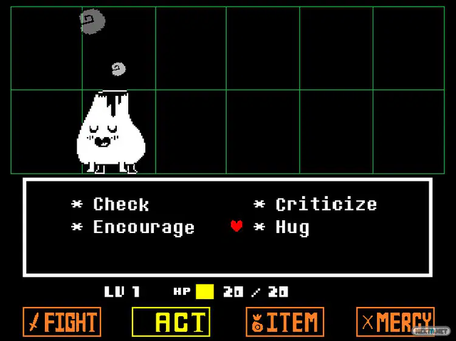
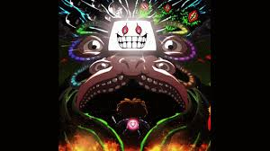
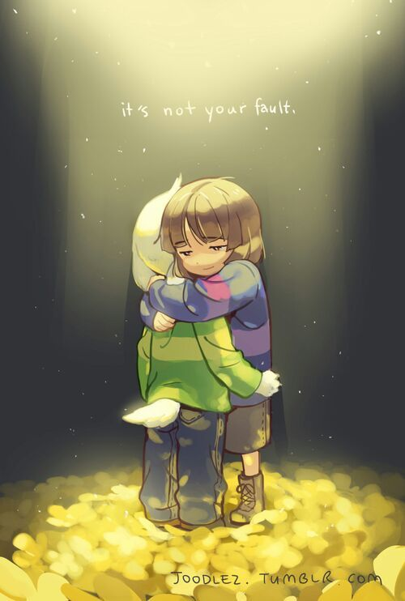
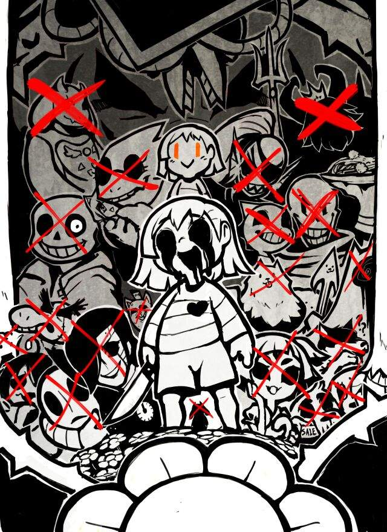

Mecanicas
Undertale presenta una mezcla de puzzles, exploracion y combates por turnos. El jugador puede elegir entre luchar, actuar, usar objetos o huir durante los combates. Las decisiones tomadas afectan el desarrollo de la historia y los finales disponibles.
Mecanica de la ruta Neutral
La unica condicion para que esta ruta este disponible es no matar a ningun jefe obligatorio, pero se pueden matar monstruos comunes. En esta ruta, el jugador puede elegir entre luchar o perdonar a los enemigos, lo que afecta las interacciones con los personajes y el desarrollo de la historia. Dependiendo de las acciones tomadas, hay varias variaciones de este final.
Mecanica de la ruta Pacifista
Para acceder a esta ruta, el jugador debe evitar matar a cualquier mounstruo, haber completado la ruta Neutral y realizar las citas con Papyrus, Undyne y Alphys. También tener una fortaleza mental si no quiere terminar llorando con su final de esta ruta.
Mecanica de la ruta Genocida
En esta ruta, el jugador debe matar a todos los monstruos que encuentre en cada area del juego, incluyendo jefes obligatorios y monstruos comunes. Esto afecta significativamente la historia, las interacciones con los personajes y el final del juego, llevando a un enfrentamiento final contra Sans.
Mecanica de la ruta Dificil

Al momento de ingresar el nombre del personaje se debe colocar "Frisk". Esto hara que enemigos de HotLand aparezcan al principio del juego, aumentando la dificultad de los combates y la cantidad de enemigos que el jugador debe enfrentar.